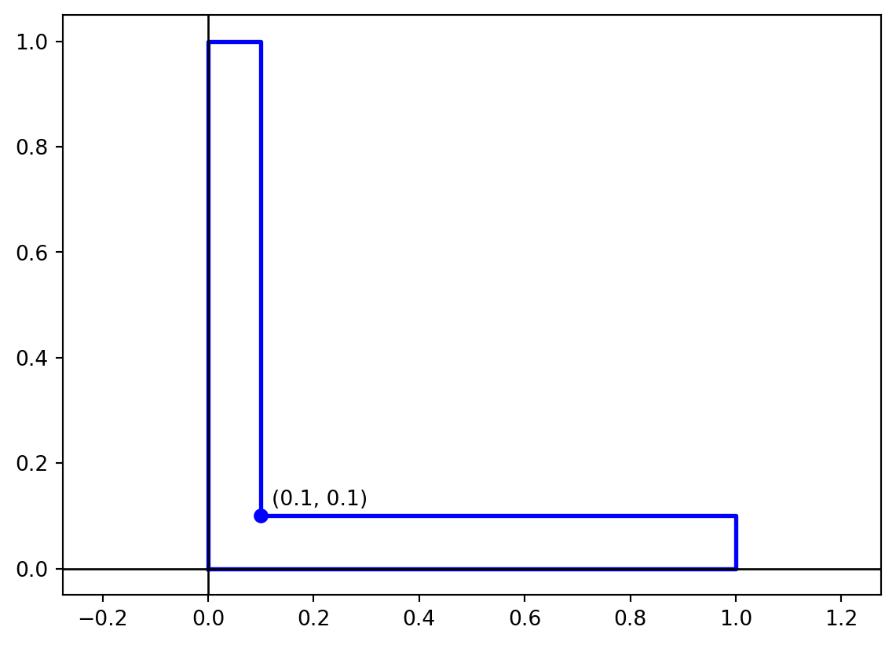
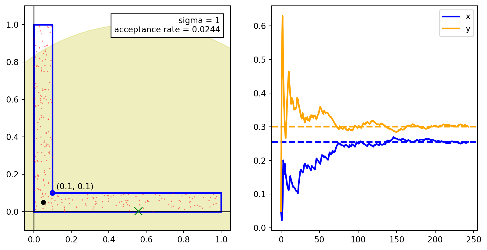

9 Metropolis–Hastings Algorithm
Metropolis–Hastings algorithm is a Markov Chain Monte Carlo (MCMC) method used to sample from a probability distribution. It is a type of a rejection sampling algorithm where we generate a sequence of samples from a target distribution by proposing a new sample and accepting or rejecting it based on a certain criterion. The algorithm is widely used in Bayesian statistics, statistical physics, and machine learning.
We’ll start a few examples to understand the algorithm and then discuss the general algorithm.
9.1 Random Walks Metropolis–Hastings Algorithm
Consider a region \(\Omega\) in \(\mathbb{R}^n\). Suppose we want to sample uniformly from this region. One way to do this is through rejection sampling. We envelope the region in simple shape like a cube and sample uniformly from the cube. If the sample lies in the region \(\Omega\), we accept it, otherwise we reject it. The efficiency of this method depends on the ratio of the volume of the cube to the volume of the region \(\Omega\). If the region is highly non-convex, this ratio can be very small and the rejection sampling can be very inefficient.
An alternative method is to use random walks. We start at a point \(x_0\) in the region \(\Omega\) and take a random step in a random direction. If the new point \(x_1\) is in the region \(\Omega\), we accept it, otherwise we stay at the point \(x_0\). We repeat this process to generate a sequence of points. This method is more efficient than rejection sampling for highly non-convex regions.
The rationale behind this is that if a point is in the region \(\Omega\), then a point near it is also likely to be in the region. We can use this idea to sample from a probability distribution. The random walk Metropolis–Hastings algorithm for generating \(N\) samples from a region \(\Omega\) is as follows:
- Start at a point \(x_0\) in the region \(\Omega\).
- For \(i = 0, 1, \ldots, N-1\):
- Generate a random step \(\sigma x\).
- Compute the new point \(y\) near \(x_i\).
- If \(y\) is in the region \(\Omega\),
- Set \(x_{i+1} = y\).
- Else,
- Set \(x_{i+1} = x_i\).
- Return the sequence of points \(x_0, x_1, \ldots, x_{N-1}\).
This is an example of a Metropolis–Hastings algorithm. The acceptance criterion is that the new point \(y\) should be in the region \(\Omega\).
9.1.1 Proposal Distribution
The missing piece in the above algorithm is the method to generate a new point \(y\) near the current point \(x_i\). This is done using a proposal distribution. The proposal distribution can be almost of any form, but it should be easy to sample from. The choice of the proposal distribution is crucial for the efficiency of the algorithm. A good proposal distribution should be able to explore the region \(\Omega\) efficiently.
In the case of random walks, there are two common choices for the proposal distribution:
- Gaussian proposal: We sample a new point from a Gaussian distribution centered at the current point \(x_i\) with a certain variance.
- Uniform proposal: We sample a new point from a uniform distribution in a neighborhood of the current point \(x_i\).
Example 9.1 Consider the L-shaped region in \(\mathbb{R}^2\) as shown below. This is a non-convex region and rejection sampling would only provide an efficiency of \(0.1 + 0.1 - 0.01 = 0.18\). We’ll use the Metropolis–Hastings algorithm to sample from this region with higher efficiency.
The images below show scatter plots for the samples generated using the Metropolis–Hastings algorithm with four different choices of the Gaussian proposal distribution with standard deviations \(1\), \(0.5\), \(0.2\), and \(0.01\). The plots to the right are the running averages of the \(x\) and \(y\) coordinates. The scatter plot and the running averages provide a visual representation of the convergence of the samples to the target distribution.



9.1.2 Choosing the Proposal Distribution
Notice that there is a tradeoff between the acceptance rate and the rate of convergence. In the above example,
- The proposal distribution with \(\sigma = 1\) has the lowest acceptance rate but the samples are well spread out and the underlying markov chain converges quickly.
- The proposal distribution with \(\sigma = 0.01\) has the highest acceptance rate but the samples are clustered and the underlying markov chain converges slowly. In the above simulation, even after \(10^5\) samples (most of which are accepted), the samples are still clustered.
Both of these are undesirable. We need to choose a proposal distribution that has a good balance between the acceptance rate and the rate of convergence.
We see that for \(\sigma = 0.5\), the samples are well spread out and the underlying markov chain converges quickly to the target distribution. This is a good choice for the proposal distribution. However, the acceptance rate is \(0.07\) which is lower than the acceptance rate for naive rejection sampling AND the generated samples are correlated. It is better to use rejection sampling than to use this proposal distribution.
For \(\sigma = 0.2\), the acceptance rate is \(0.3\) which is better than the acceptance rate for naive rejection sampling. The samples are well spread out and the underlying markov chain converges quickly, although not as quickly as for \(\sigma = 0.5.\) For this example, \(\sigma = 0.2\) is a good choice for the proposal distribution. We can fine tune this parameter to get a better acceptance rate, if needed.
9.2 Metropolis–Hastings Algorithm
The general algorithm for the Metropolis–Hastings algorithm is an algorithm for generating a sequence of samples from a probability distribution \(p(x)\).
9.2.1 Structure of Metropolis–Hastings Algorithm
The above example illustrates the general structure of the Metropolis–Hastings algorithm for sampling from a probability distribution \(p(x)\). The algorithm is as follows:
- Initialization: Start at a point \(x_0\).
- For \(i = 0, 1, \ldots, N-1\):
- Generate a proposal \(y\) close to \(x_i\).
- Evaluate the acceptance ratio \(\alpha (y | x_i)\).
- Accept \(y\) with probability \(\alpha (y | x_i)\).
- If accepted, set \(x_{i+1} = y\).
- Else, set \(x_{i+1} = x_i\).
- Return the sequence of points \(x_0, x_1, \ldots, x_{N-1}\).
9.2.2 Proposal Distribution
For the MH algorithm, we need to specify a proposal distribution for generating “nearby points”. This is a joint distribution \(q(x, y)\) for two random variables \(X\) and \(Y\). However, for running the algorithm we only need the conditional distribution \(q(y | x)\). As such, it’s more common to say that the proposal distribution is the conditional distribution \(q(y | x)\). We think of \(x\) as the current point and \(y\) as the proposed point so that the proposal distribution \(q(y | x)\) is the distribution of the proposed point \(y\) given the current point \(x\).
In the Example 9.1, the proposal distribution \(q(y|x)\) was a Gaussian distribution centered at \(x\) with a chosen variance,
\[\begin{align*} q(y | x) = \mathcal{N}(y ; x, \sigma^2 I). \end{align*}\]
The proposal distribution can be any distribution that is easy to sample from. The choice of the proposal distribution is crucial for the efficiency of the algorithm.
9.2.3 Acceptance Criterion
Once we generate a proposal \(y\), we need to evaluate an acceptance criterion for \(w\). The acceptance criterion is based on the ratio of the target distribution \(p(x)\) and the proposal distribution \(q(y | x)\). We calculate the acceptance ratio as
\[ \alpha (y | x) = \min \left\{ \frac{p(y)}{p(x)} \cdot \frac{q(x | y)}{q(y | x)}, 1 \right\}. \]
The complete Metropolis–Hastings algorithm is as follows:
- Initialization: Start at a point \(x_0\).
- For \(i = 0, 1, \ldots, N-1\):
Generate a proposal \(y\) from the proposal distribution \(q(y | x_i)\).
Compute the acceptance ratio \[ \alpha(y | x) = \min\left\{ \frac{p(y)}{p(x)} \cdot \frac{q(x | y)}{q(y | x)}, 1 \right\}. \]
Accept \(y\) with probability \(\alpha(y | x)\):
- If \(y\) is accepted, set \(x_{i+1} = y\).
- Otherwise, set \(x_{i+1} = x_i\).
- Return the sequence of points \(x_0, x_1, \ldots, x_{N-1}\).
We can expand the algorithm further as follows:
- Initialization: Start at a point \(x_0\).
- For \(i = 0, 1, \ldots, N-1\):
- Generate a proposal \(y \sim q(y | x_i)\).
- Compute \[ \alpha_1 = p(y) \cdot q(x_i | y), \quad \alpha_2 = p(x_i) \cdot q(y | x_i). \]
- If \(\alpha_1 \geq \alpha_2\),
- Set \(x_{i+1} = y\).
- Else,
- Generate a random number \(u \sim \text{Uniform}(0, 1)\).
- If \(u < \alpha_1 / \alpha_2\),
- Set \(x_{i+1} = y\).
- Else,
- Set \(x_{i+1} = x_i\).
- Return the sequence of points \(x_0, x_1, \ldots, x_{N-1}\).
9.3 Symmetric Proposal Distribution
Often we use a symmetric proposal distribution \(q(y | x) = q(x | y)\). In this case, the acceptance ratio simplifies to
\[ \alpha(y | x) = \min \left\{ \frac{p(y)}{p(x)}, 1 \right\}. \]
The Metropolis algorithm is a special case of the Metropolis–Hastings algorithm where the proposal distribution is symmetric. The Metropolis algorithm is widely used in practice. The algorithm is as follows:
- Initialization: Start at a point \(x_0\).
- For \(i = 0, 1, \ldots, N-1\):
- Generate a proposal \(y \sim q(y | x_i)\).
- If \(p(y) \geq p(x_i)\),
- Set \(x_{i+1} = y\).
- Else,
- Generate a random number \(u \sim \text{Uniform}(0, 1)\).
- If \(u < p(y) / p(x_i)\),
- Set \(x_{i+1} = y\).
- Else,
- Set \(x_{i+1} = x_i\).
- Return the sequence of points \(x_0, x_1, \ldots, x_{N-1}\).
Example 9.2 If \(p(x)\) is a uniform distribution over the region \(\Omega\), then the Metropolis algorithm reduces to the random walk Metropolis–Hastings algorithm. In this case, the acceptance ratio becomes
\[ \alpha(y | x) = \begin{cases} 1, & \text{if } y \in \Omega, \\ 0, & \text{if } y \notin \Omega. \end{cases} \]
This means that we always accept a proposal \(y\) if it is in the region \(\Omega\) and reject it otherwise. This is equivalent to the random walk Metropolis–Hastings algorithm in Section 9.1.
Several other algorithms, such as rejection sampling, random walks on graphs, and Gibbs sampling, can be viewed as special cases of the Metropolis–Hastings algorithm.
9.4 Metropolis Markov Chain
If the target distribution \(p(x)\) is defined over the sample space \(\Omega\), then the Metropolis–Hastings algorithm generates a Markov chain with state space \(\Omega\).
For simplicity,
- we will analyze the Metropolis algorithm with a symmetric proposal distribution \(q(y | x) = q(x | y)\), and
- we will assume that the target distribution \(p(x)\) is defined over a finite sample space \(\Omega\).
The transition matrix for the Markov chain is given by
\[ \begin{aligned} \mathbb{P}(X = b | X = a) = \begin{cases} q(b | a) & \text{if } p(b) \geq p(a) \text{ and } a \neq b, \\ \frac{p(b)}{p(a)} \cdot q(b | a) & \text{if } p(b) < p(a) \text{ and } a \neq b, \\ q(a | a) + \sum \limits_{b \in \Omega, p(b) < p(a)} q(b | a) \cdot \left(1 - \frac{p(b)}{p(a)}\right) & \text{if } a = b. \end{cases} \end{aligned} \]
One can check that this defines a valid transition matrix by showing that the sum of the transition probabilities for each state is \(1\).
\[ \begin{aligned} &\sum \limits_{b \in \Omega} \mathbb{P}(X = b | X = a) \\ &= \sum \limits_{p(b) \ge p(a), a \neq b} q(b | a) + \sum \limits_{p(b) < p(a)} \frac{p(b)}{p(a)} \cdot q(b | a) + q(a|a) + \sum \limits_{p(b) < p(a)} q(b | a) \cdot \left(1 - \frac{p(b)}{p(a)}\right) \\ &= \sum \limits_{b \in \Omega} q(b | a) \\ &= 1. \end{aligned} \]
9.4.1 Detailed Balance Equations
Theorem 9.1 The Metropolis algorithm is reversible with respect to the target distribution \(p(x)\). This means that the Markov chain defined by the Metropolis algorithm satisfies the detailed balance equations:
\[ p(a) \cdot \mathbb{P}(X = b | X = a) = p(b) \cdot \mathbb{P}(X = a | X = b). \]
Proof. We only need check the detailed balance equations for the case when \(a \neq b\). The case when \(a = b\) is trivial. We make two cases:
- Case 1: \(p(a) \neq p(b)\).
Without loss of generality, assume that \(p(a) < p(b)\). Then we have
\[ \begin{aligned} p(a) \cdot \mathbb{P}(X = b | X = a) &= p(a) \cdot q(b | a) \\ &= p(a) \cdot q(a | b) \\ &= p(b) \cdot q(a | b) \dfrac{p(a)}{p(b)} \\ &= p(b) \cdot \mathbb{P}(X = a | X = b). \end{aligned} \]
- Case 2: \(p(a) = p(b)\). In this case, we have \[ \begin{aligned} p(a) \cdot \mathbb{P}(X = b | X = a) &= p(a) \cdot q(b | a) \\ &= p(b) \cdot q(a | b) \\ &= p(b) \cdot \mathbb{P}(X = a | X = b). \end{aligned} \] Thus, in both cases, we have shown that the detailed balance equations hold. This completes the proof.